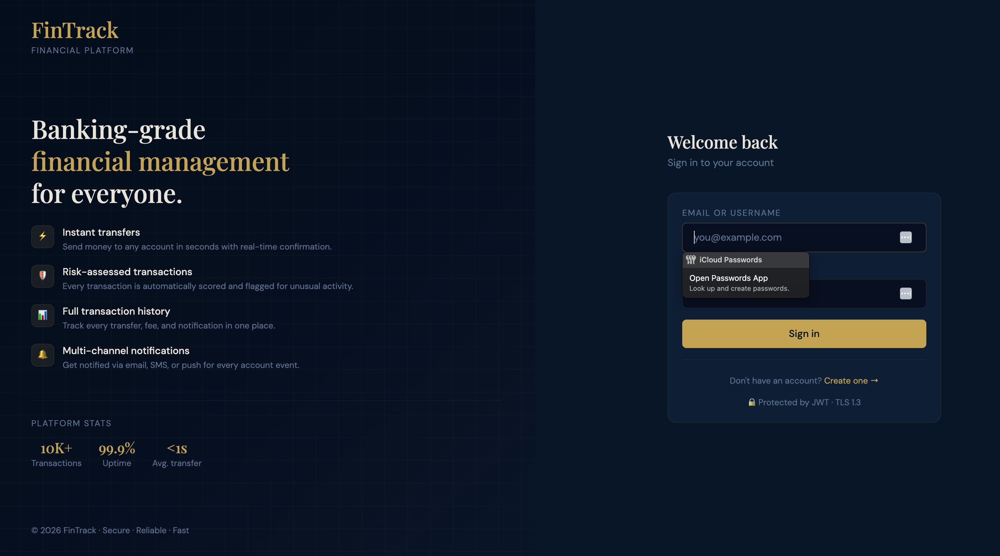

01 / Authentication
Sign in

Welcome flow with credential autofill, password manager integration, and JWT-protected session handshake. Feature callouts surface the platform's instant transfers, risk scoring, transaction history, and multi-channel notifications.